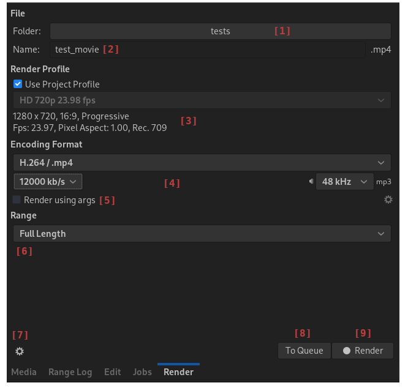

Flowblade provides two ways to render video output:
- Launch individual renders from the Render Panel in the main window.
- Add render items to the Batch Render Queue application for rendering later. See the chapter Batch Rendering for more information.
Render Panel

[1] Folder select button. Select the folder where the output file will be saved.
[2] File Name text entry widget. Enter the name of the output file.
[3] Render Profile section.
- Use Project Profile check button. When unchecked, allows you to select a different profile for the rendered video.
- Profile Select drop-down menu. Select the profile to use for rendering.
- Project Info. Displays the project's dimensions, frame rate, pixel aspect ratio and colorspace.
[4] Encoding Format section.
- Encoding / File Type drop-down menu. Select the video encoding and container format to use for rendering.
- Bitrate drop-down menu. Select the bitrate to use for rendering. This option is not available for all encodings.
- Sample Rate drop-down menu. Select the audio sample rate to use for rendering. This option is not available for all encodings.
[5] Render Using Args row.
- Render Using Args check box. When activated, rendering uses a list of user-defined arguments instead of the preset options selected in the Encoding Format section.
- Args Info text. Displays information about the arguments currently being used. Only visible when Render Using Args is activated.
- Set Args pop-up launcher. Opens the argument editor. Only active when Render Using Args is activated.
[6] Range defines the rendering range. You can render either the entire Sequence or the area between the Timeline Mark In and Mark Out points.
[7] Performance and Quality settings launcher. Opens the Performance panel in the Preferences dialog, which contains additional rendering-related settings.
[8] To Queue button. Creates a render item using the current render settings and Sequence state. The Batch Render application opens and displays the newly created item in the queue.
[9] Render button. Starts rendering the current Sequence using the selected render options.
Workflows
Export rendering workflow
- Select the destination folder using the [1] Folder button and enter the output file name in the [2] File Name field.
- Select the output video profile using the controls in the [3] Render Profile section. In most cases, using the project profile is recommended.
- Use the controls in the [4] Encoding Format section to select the encoding, container format, bitrate and audio sample rate.
- Press the [9] Render button to start rendering.
- A window will open displaying the output file path, estimated remaining time, elapsed rendering time and a progress bar.
- The window closes automatically when rendering is complete.
Creating a Render Item for the Batch Render Queue
- Select the destination file, encoding and profile as described above.
- Press the [8] To Queue button. This creates a render item using the current render settings and Sequence state.
- The Batch Render application opens with the newly created render item added to the queue.
- See the chapter Batch Rendering for instructions on how to continue.
Rendering using args
- Select the destination file and rendering profile as described above.
- Activate the [5] Render Using Args check box. A popover will open with an editable list of rendering arguments.
- Edit the arguments in the text area. Each line must contain a single key/argument pair.
- To use a preset encoding as a starting point, close the popover and select the desired encoding preset. Open the popover again and press the Load Args From Current Encoding button. The arguments for the selected encoding will be loaded into the editing area.
- Close the popover. An information message will appear in the [5] Render Using Args row.
- Rendering will now use the specified arguments instead of the selected encoding preset.
- Deactivating the Render Using Args check box switches rendering back to the selected encoding preset.
Additional Information on Rendering with Args: MLT and FFmpeg
- Flowblade Movie Editor is a Python application that uses the MLT multitrack media framework.
- MLT uses FFmpeg libraries, including libavformat and libavcodec, to render output files. Video encoding is controlled by setting FFmpeg encoding parameters.
- With the Render Using Args feature, you can use the same arguments that would be used when rendering video directly with FFmpeg.
- Almost all encodings available through FFmpeg can also be used in Flowblade.